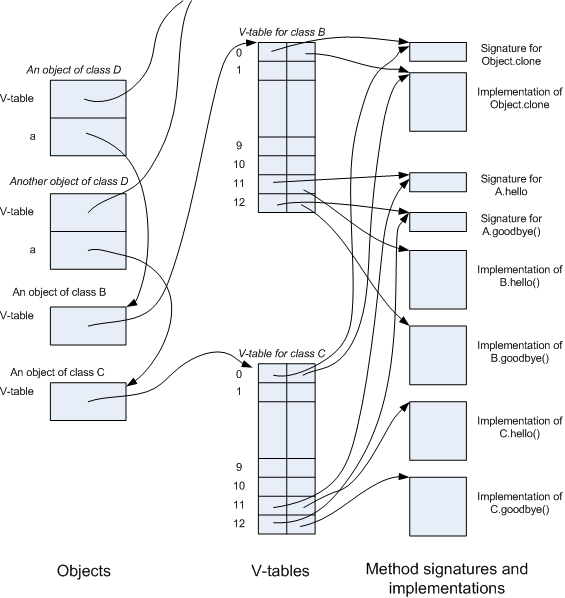

Here we look at how polymorphic calls are actually implemented. The intention is to help cement the concept of polymorphic calls by showing one way to implement it.
Polymorphic calling is also called "late binding", "dynamic binding", and "dynamic dispatch". In any case, the idea is that the code implementing a call needs to be found at run time.
When we call a static method, the method implementation can be inferred at compile time. For example if we have
class S { static void hello() { System.out.println("hello") ; } static void main(String[] args) { A.hello() ; } }
it is evident exactly what code will be executed. In fact the compiler may in-line the call, i.e. rewrite the code as
class S { static void hello() { System.out.println("hello") ; } static void main(String[] args) { System.out.println("hello") ; } }
Assuming in-lining does not happen and that the first instruction of A.hello() is compiled at location 12345, the call can be compiled to a machine instruction like this
call 12345
Consider calling a method through a polymorphic reference. Here is an example:
abstract class A { abstract void hello() ; abstract void goodbye() ; } class B extends A { void hello() { System.out.println( "Hello" ) ; } void goodbye() { System.out.println( "Goodbye" ) ; } } class C extends A { void hello() { System.out.println( "Bonjour" ) ; } void goodbye() { System.out.println( "Au revoir" ) ; } } class D { A a ; D( A a ) { this.a = a ; } void foo() { a.hello() ; a.goodbye() ; } }
The calls a.hello() and a.goodbye() in class D are polymorphic. The compiler can not compile them to call instructions with a constant addresses, nor can it inline them.
Instead, at run time, the computer looks up the address of the subroutine in a table. Which table is used depends on which class the object is a direct instance of. This is called dynamic dispatch.
The figure below shows one way objects and methods can be represented at run time.

I've assumed that each object is represented by a chunk of memory, of which the first 4 bytes is the address of a structure called a V-table and the subsequent bytes hold the values of the object's fields. We need one V-table for each nonabstract class. The V-table has one entry for each method that the class and its superclasses implement. Each entry has two parts. The first points to an object representing the method's signature. The second is the address of the machine code for the method's implementation.
A polymorphic call can be implemented with a search through the V-table for the appropriate method signature. For example in the call to a.hello() in class D, the signature is known to be that for A.hello(), so we can search the V-table of the object a refers to for an item whose first field points to the object for signature A.hello().
However, it turns out that a search is often not needed.
The compiler can ensure that the items in the V-table are listed in an order so that the methods declared in Object are first, then methods declared in a direct subclass of Object, and so on until we reach the class to which the V-table applies. All classes that inherit the method signature from a common superclass will have the address in the same location of their V-tables. For example A.hello() will be item 11 of the V-table for any class that extends A and A.goodbye() will be item 12. (There are 11 methods declared in class Object, which is the direct superclass of A. These come first in the v-table. hello and goodbye could also be the other way around, as long as we are consistent.)
In a call x.f(...), if the static type of the recipient expression (x) is a class, then we can predict the position of the method in the V-table. No search is needed. In the example, the static type of a is A, so the item for the method is in position 11 of the V-table.
The machine code --for a hypothetical computer-- for calling a.hello() from class D looks something like this. (I'm assuming that r0 contains the address of the current active object -- the this pointer).
r1 := load r0+4 // The value of this.a =: r1 ... // check that a is not null. r2 := load r1 // The address of the v-table =: r2 r3 := r2 + 92 // The address of the implementation =: r3 push r0 // Save the value of this push ... // Save any other registers that need saving r0 := r1 // Set the this pointer. call r3 // Push the PC and jump to the location stored in r3. ... pop // Restore any other registers that need restoring. r0 := pop // Restore the saved this pointer.
The number 92 here is based the assumption that both object and code addresses take 4 bytes: 92 = 11 * 8 + 4.
When a polymorphic call x.f(...) is made though an interface (i.e., the static type of x is an interface), we can't be sure of where in the V-table the entry for the method can be found. In this case the V-table must be searched. Because of run-time type safety, the method must be somewhere in the table.
Consider the following example
interface I { void i0() ; } class E { void e0() {...} } class F extends E implements I { void i0() { ... } } class G { void g0() { ... } void g1() { ... } } class H extends G implements I { void i0() { ... } } class J { I i ; J(I i) { this.i = i ; } void foo( ) { i.i0() ; } }
As an exercise, draw a diagram with two J objects, one of which points to an F object and the other points to an H object. You will find that in the V-table for class F, method i0 appears as item 11, whereas in the V-table for class H, method i0 appears as item 12.
By the way, V-tables are so called because in C++, methods that can be called polymorphically are called virtual functions. There are other ways to organize V-tables besides the one I've shown.